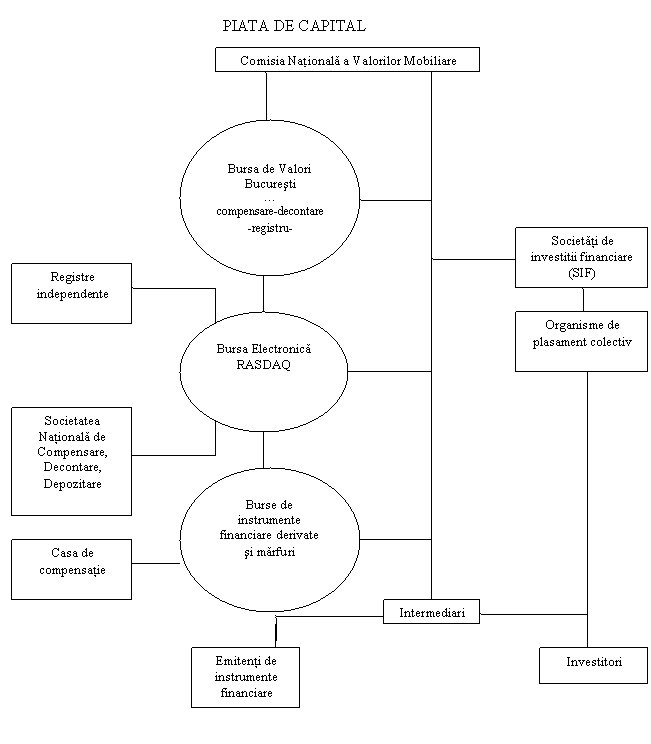

Lucrarea de faţă îşi propune să constituie un instrument e-learning util elevilor şi profesorilor de economie pentru predarea-învăţarea-evaluarea unităţii de învăţare BURSA DE VALORI BUCUREŞTI.
|
CAPITOLE: I. ELEMENTELE DEFINITORII ALE PIEŢEI DE CAPITAL II. BURSA DE VALORI. BURSA DE VALORI BUCUREŞTI III. SISTEMUL DE TRANZACŢIONARE AL BURSEI DE VALORI BUCUREŞTI |


2. 1. DEZVOLTAREA PIEŢEI DE CAPITAL ÎN ROMÂNIA
Premisele apariţiei pieţei de capital in România au fost create o dată cu promulgarea Legii nr. 31/1990 privind societăţiile comerciale, care au asigurat cadrul legal necesar naşterii şi dezvoltării societăţilor pe acţiuni şi totodată, a instituit un cadru clar pentru principalele produse utilizate pe piaţa de capital: acţiunile şi obligaţiunile. Potrivit acestei legi, societăţile comerciale pe acţiuni au putut face apel la economiile publicului pentru infiintare sau pentru majorarea capitalului social ( primele atrageri de capital de la populaţie au fost realizate de bănci). Astfel putem defini anul 1990 drept momentul apariţiei pieţei primare de capital. Un moment important l-a constituit adoptarea Legii nr. 58/1991 a privatizării societăţilor comerciale, care a relevat o dată in plus nevoia existenţei unei pieţe secundare. In anul 1992 certificatele de proprietate au fost emise şi distribuite in forma materializată, la purtător. Anul 1992 a reprezentat şi momentul derulării primei oferte publice de acţiuni contra numerar din cadrul procesului de privatizare, ofertă care a fost efectuată de Agenţia Naţională pentru Privatizare şi Banca Română pentru Dezvoltare cu sprijinul unei societăţi de consultanţă din Marea Britanie. Către sfarşitul anului 1992 s-a infiintat Agenţia Naţională pentru Titluri de Valoare, ca direcţie in Ministerul Finanţelor. Paralel, in Banca Naţională a Romaniei s-a creat Centrul de Proiectare şi Implemenare a Pieţelor de Capital, “embrionul” viitoarei Burse de Valori Bucureşti. O dată cu apariţia Ordonanţei nr 18/1993 privind reglementarea tranzacţiilor nebursiere cu valori mobiliare şi organizarea unor instituţii de intermediere a fost infiinatata Agenţia Valorilor Mobiliare (AVM) prin transformarea Agenţiei Natioale pentru Titluri de Valoare (ANTV). In anul 1994 a fost adoptatata Legea nr. 52 privind valorile mobiliare şi bursele de valori, care a creat condiţii pentru apariţia de noi instituţii pe piaţă: Comisia Naţională a Valorilor Mobiliare (CNVM) prin transformarea Agenţiei Valorilor Mobiliare , ca autoritate administrativă autonomă in subordinea Parlamentului, Bursa de Valori Bucureşti, societăţi de depozitare, societăţi de registru, asociaţii profesionale cu statut de organisme de autoreglementare , care au condus la apariţia de noi pieţe secundare de tranzacţionare (RASDAQ), altele decât cale bursiere, etc. Bursa de Valori, ca o componentă de bază a pieţei secundare din România, a fost reinfiinţata in anul 1995 şi a fost finanţată de la bugetul de stat, cu condiţia ca, in termen de trei ani de la infiinţare, să ramburseze din comisioanele aplicate tranzacţiilor efectuate suma necesitată de infiinţarea sa. Anul 1996 a marcat incheierea procesului de privatizare in masă, când s-a constituit piaţa extrabursiera din nevoia de a oferi cadrul instituţional organizat pentru tranzacţionarea unui număr foarte mare de acţiuni apartinand unui număr de pste 5000 de societăţi comerciale), având o largă difuzare in rândul publicului(peste 16 milioane de acţionari). După reluarea activităţii de tranzacţionare la Bursa de Valori Bucureşti la sfârşitul anului 1995, piaţa de capital a cunoscut un adevărat “boom” in cursul anului 1997, principalul motor al creşterilor realizate in acea perioadă fiind investitorii străini. Scăderea timp de trei ani consecutivi a produsului intern brut (PIB), la care s-au adăugat in anul 1998 efectele crizei financiare asiatice, a făcut ca piaţa bursieră din România să funcţioneze in “regim de avarie”, cu niveluri scăzute ale capitalizării bursiere şi ale valorii tranzacţiilor. Reluarea creşterii economice incepând cu anul 2000, stabilizarea principalilor indicatori macroeconomici şi susţinerea procesului de dezinflaţie , care a fost urmat de reducerea dobânzilor pasive practicate de sistemul bancar, accesul României la finanţare pe pieţele internaţionale de capital şi diminuarea randamentelor oferite de Ministerul Finanţelor Publice pentru titlurile emise pe piaţa internă au determinat o reorientare a unei părţi din fondurile disponibile către piaţa de capital şi o creştere a interesului investitorilor pentru emitenţii de valori mobiliare listate la cota bursei. Anul 2002 a marcat schimbarea cadrului legislativ , prin elaborarea, aprobarea şi intrarea in vigoare a unui pachet legislativ. Modificarea cadrului legislativ a avut un impact pozitiv asupra pieţei, a cărei revigorare a fost marcată de creşterea interesului investitorilor pentru valorile mobiliare emise de societăţi comerciale româneşti. Contextul actual in care se află economia României şi piaţa de capital pare a oferi cadrul propice pentru ca pe partea de ofertă de valori mobiliare să apăra noi emitenţi care să propună investitorilor proiecte viabile de dezvoltare pe termen lung a unei afaceri, să atragă resurse financiare din piaţă de capital şi sa contribuie la creşterea economică generală. Astfel de mişcări in zona pieţei primare de capital au fost observate incă din anul 2002, când au fost lansate şi primele oferte publice de vânzare de obligaţiuni municipale, care au fost ulterior listate la cota bursei. Pentru prima dată de la lansarea lor oficială in anul 2002, indicii Bursei de Valori Bucureşti au atins nivelul de referinţă de 1000 de puncte de indice, instalându-se tendinţa de creştere susţinută a nivelului acestora, fapt ce pune incă o data in evidenţa interesul investitorilor autohtoni şi străini pentru piaţa de capital a României. In anul 2003 a fost marcat un nou inceput, şi anume listarea şi tranzacţionarea primei emisiuni de obligaţiuni corporative. La jumătatea anului 2004 a intrat in vigoare o noua lege, legea nr 297/2004 privind piaţă de capital. Configuraţia actuală a pieţei de capital este prezentată in schema 3.

SCHEMA 3 : CONFIGURAŢIA ACTUALĂ A PIEŢEI DE CAPITAL A ROMÂNIEI
Într-o perspectivă pe termen mediu, strategia pieţei de capital pentru perioada 2005-2007 cuprindea obiective cum sunt:
ÎN ACELAŞI CAPITOL : 2. 1. DEZVOLTAREA PIEŢEI DE CAPITAL ÎN ROMÂNIA 2. 2. ISTORICUL BURSEI DE VALORI 2. 3. ACTIVITATEA PREZENTĂ A BURSEI DE VALORI BUCUREŞTI 2. 4. ORGANIZAREA BURSEI DE VALORI BUCURESTI
|